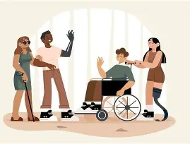
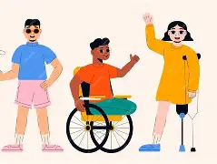

01
Inclusão para todos
A inclusão significa criar espaços onde todas as pessoas possam participar, aprender, trabalhar e utilizar a tecnologia com autonomia.
A tecnologia pode transformar vidas quando é criada pensando nas diferentes necessidades das pessoas. A acessibilidade digital ajuda a tornar sites, aplicativos e serviços mais inclusivos.
Conheça o projeto
A inclusão digital busca diminuir barreiras e permitir que diferentes pessoas tenham acesso às mesmas oportunidades.
A inclusão significa criar espaços onde todas as pessoas possam participar, aprender, trabalhar e utilizar a tecnologia com autonomia.

Sites e aplicativos acessíveis possuem navegação clara, textos legíveis, bom contraste e recursos que facilitam o uso por diferentes pessoas.
.webp)
Desenvolver pensando na diversidade ajuda a construir experiências digitais mais humanas, simples e acessíveis para todos.
A tecnologia também pode ajudar pessoas com deficiência intelectual a aprender, se comunicar e realizar atividades com mais autonomia.
Interfaces simples, informações organizadas, linguagem clara e recursos visuais podem facilitar a compreensão e tornar experiências digitais mais acessíveis.
Uma interface bem planejada pode fazer a diferença na experiência de quem utiliza uma tecnologia.
Conheça os conteúdos sobre tecnologia, acessibilidade e inclusão.
Narração: A acessibilidade digital permite que pessoas com diferentes necessidades utilizem sites, aplicativos e serviços digitais.
Narração: Recursos como textos alternativos, contraste adequado, navegação pelo teclado e linguagem clara ajudam a diminuir barreiras.
Descrição visual: Pessoas utilizam diferentes dispositivos para acessar conteúdos digitais. A navegação apresenta elementos claros e organizados.
Narração: Criar tecnologia para todos significa pensar na diversidade desde o início do desenvolvimento.
Podcast sobre acessibilidade digital
Apresentador: Hoje vamos conversar sobre como a tecnologia pode ajudar a construir uma sociedade mais inclusiva.
Convidado: A acessibilidade digital é importante porque permite que mais pessoas tenham acesso à informação e aos serviços disponíveis na internet.
Apresentador: E pequenas mudanças no desenvolvimento de um site podem fazer diferença?
Convidado: Sim. Uma estrutura organizada, textos claros, contraste adequado e alternativas para conteúdos visuais são exemplos de recursos que podem reduzir barreiras.
Apresentador: Por isso, pensar em acessibilidade desde o começo é uma forma de criar tecnologia para mais pessoas.